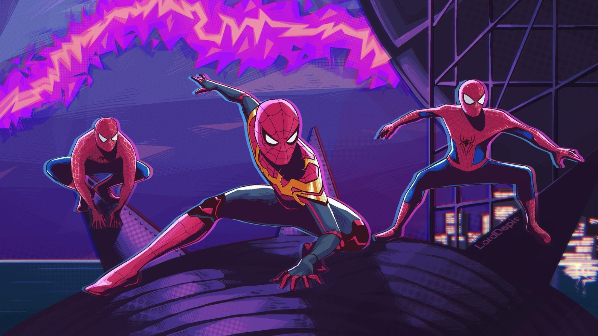

About Spider-Man
The bite from a radioactive spider granted Peter Parker amazing arachnid-like powers. After losing his beloved Uncle Ben to a burglar, grief- stricken Peter vowed to use his incredible abilities to protect his city as the Amazing Spider-Man. Peter’s trials taught him an invaluable lesson: with great power, there must also come great responsibility.
Spider-Man - the iconic movie character
Characteristics
- Superhuman strength
- Agility
- Endurance
Spider-Man's Friends
The two heroes have become incredibly close friends who even gifted each other matching Bad Boys-themed Christmas sweaters. Deadpool is definitely one of Spider-Man top superhero friends. Click the link below to know more about Deadpool